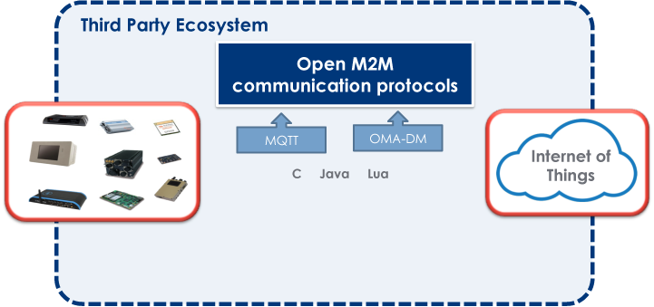

IoT/M2M Protocols Open Source implementations of standard IoT and M2M protocols.
The IoT Working Group is supporting lightweight protocols for two-way communications between devices and server.
We are currently focusing on providing first-class Open Source implementations for:
- MQTT, a lightweight pub-sub messaging protocol being standardized at OASIS
- CoAP, an IETF standard protocol targeting resource constrained devices,
- OMA LWM2M (Lightweight M2M), a standard device management protocol from the Open Mobile Alliance,
- ETSI M2M.
Vision
One of the reasons why IoT/M2M development can prove to be difficult is the large number of communication protocols used in today's industries. From the industrial protocol used to collect temperature data on a sensor, to the communication protocol used to send this data to a server in the Cloud, to the device management protocol that allows remote firmware upgrade of a system, there are just too many protocols to master for building an end-to-end IoT/M2M solution.
We propose Open Source implementations for protocols already
well-adopted in M2M fields (such as MQTT, CoAP and OMA-DM).
We
believe it is a way to encourage their adoption, as well as to
improve the quality of these implementations.
We also have a project proposal to implement the CoAP, Lightweight M2M and the ETSI M2M standard.

MQTT
Message Queuing Telemetry Transport (MQTT) is a protocol designed to connect the physical world devices and networks, with applications and middleware used in IT and Web development, making it an ideal connectivity protocol for IoT and M2M.
It is a lightweight publish-subscribe protocol that runs on embedded devices and mobile platforms, while connecting to highly scalable enterprise and web servers over wired and wireless networks. It is useful for connections with remote embedded systems where a small code footprint is required and/or network bandwidth is at a premium or connectivity unpredictable, and, for mobile applications that require small size, low power usage, minimised data packets, and efficient distribution of information to one or many receivers.
With loose coupling and quality-of-service, MQTT is optimized for dynamic system environments where high volumes of physical world messages and events need to be made available to Web and enterprise servers, and other consumers. MQTT has been well positioned for even the unanticipated requirements of M2M and IoT applications.
Getting started with MQTT
The Paho project is based around MQTT client runtimes that implement the MQTT messaging protocol. The client runtimes can be configured to run against a broker running on your server, or the sandbox MQTT server described below. There are Quick Start Guides available to get started. This article Practical MQTT with Eclipse Paho is also a good introduction to MQTT.
Download MQTT runtimes
Source code for our MQTT client libraries is available in multiple languages at the Paho project page.
Source code for our MQTT server library is available from the Mosquitto project
Sandbox MQTT Server
We provide a sandbox server so that you can test your MQTT-based applications against an actual MQTT broker.
CoAP
CoAP (Constrained Application Protocol) is a protocol specialized for use with constrained nodes and networks.
It implements the REST architectural style, it can be transparently mapped to HTTP. However, CoAP also provides features that go beyond HTTP such as native push notifications and group communication.
Download CoAP runtime
The Californium project will provide a Java implementation of the CoAP protocol, including support for the DTLS security layer. The source code of Californium should be available at Eclipse in Q2 2014.
Sandbox CoAP Server
We provide a sandbox server that exposes some testing resources over CoAP. You can use it to test CoAP communication scenarios.
OMA LightweightM2M
OMA LightweightM2M (LWM2M) is an industry standard for device management of M2M/IoT devices. It heavily relies on CoAP and therefore is optimized for communications over sensor or cellular networks.
OMA LWM2M provides an extensible object model that allows to enable application data exchanges in addition to the core device management features (firmware upgrade, connectivity monitoring, …)
Download LWM2M runtime
The Wakaama project will provide a C portable framework for building LWM2M clients and/or servers. The source code of Wakaama should be available at Eclipse in Q2 2014.
Sandbox LWM2M Server
We provide a sandbox LWM2M server against which LWM2M clients can be registered. The sandbox server provides a Web UI and a REST API to enable interaction with the registered clients.
OMA-DM
OMA-DM is a standard communication protocol widely used in the telecommunications industry to monitor and synchronize the state of communications devices such as mobile phones or the kind of radio modules that can be found in M2M solutions.
Getting started with OMA-DM
There is a nice introduction to OMA-DM on the developerWorks website.
Download the Koneki OMA-DM Simulator
Koneki delivers an OMA-DM simulator that provides you with a visual dashboard from where you can see the current state of your local device management tree
It can be installed very easily using the Eclipse Marketplace. You
should simply drag and drop the following button into your running
Eclipse workbench, and the installation will begin!